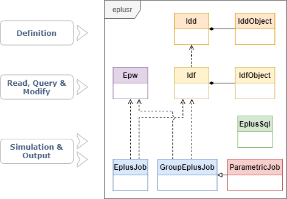

This vignette introduces eplusr class structure, how to read EnergyPlus IDFs and perform modifications on them. Familiarity with data.table is useful, but not essential to follow this vignette.
Below shows the class structure in eplusr.

Basically, eplusr uses Idf class to present the whole IDF file and IdfObject class to present a single object in an IDF. Both Idf and IdfObject class contain member functions for helping modify the data in IDF so it complies with the underlying EnergyPlus IDD (Input Data Dictionary). Similarly, IDD file is wrapped into two classes, i.e. Idd and IddObject.
Besides, Epw class is used to present EnergyPlus Weather files; EplusJob and GroupEplusJob to run single and multiple EnergyPlus simulations and collect outputs, ParametricJob to run parametric EnergyPlus simulations and collect all outputs.
It is highly recommended to read the documentation to get a thorough understanding on each class.
Parsing an IDF requires the IDD data of that version, which serves as the schema. The IDD file will be parsed first and an Idd object will be created and cached. That Idd object will be reused whenever parsing IDFs with that version. For more details, please see ?use_idd() and ?idd.
Usually, when you try to edit an IDF, the corresponding EnergyPlus is likely to be installed already. If EnergyPlus is installed in standard location (C:\EnergyPlusVX-Y-0 on Windows, /usr/local/EnergyPlus-X-Y-0 on Linux and /Applications/EnergyPlus-X-Y-0 on macOS), eplusr is able to find it and use the Energy+.idd file distributed with that release to parse the input IDF.
You can get all detected EnergyPlus versions using avail_eplus() and meta data of EnergyPlus configuration using eplus_config().
avail_eplus()
#> [1] '8.8.0' '9.4.0'
eplus_config(8.8)
#> $version
#> [1] '8.8.0'
#>
#> $dir
#> [1] "/home/runner/.local/EnergyPlus-8-8-0"
#>
#> $exe
#> [1] "energyplus"If your EnergyPlus was not installed in standard location, you can add that location using use_eplus(). After adding, all models of that version will use this path to call EnergyPlus.
use_eplus("C:/EnergyPlusV8-8-0")If the needed version of EnergyPlus was not installed, you can use install_eplus() to install it.
install_eplus(ver = 8.8)Sometimes you may just want to edit the model without installing the whole EnergyPlus software. You can just download the IDD file of that version using download_idd() or set download to TRUE in use_idd(). The code below will download IDD file for EnergyPlus v8.8.0, parse it and create an Idd object that will be used whenever parsing all EnergyPlus models of version v8.8.
path_idd <- download_idd(8.8, dir = tempdir())
use_idd(path_idd)
# OR
use_idd(8.8, download = TRUE)All IDF reading process starts with function read_idf(), which returns an Idf object. The IDF will be printed in a similar style you see in IDF Editor, with additional heading lines showing the Path, Version of the model. The classes of objects in the model are ordered by groups and the number of objects in classes are shown in square bracket.
Now let’s read an IDF file distributed with EnergyPlus 8.8.0. As we have already got the IDD, we can just ignore the idd argument.
Note: Once an EnergyPlus version X.Y is successfully located, all IDFs with versions lower than X.Y can be parsed. For example, if you have EnergyPlus v9.1 installed, all IDFs from v7.2 to v9.1 can be parsed using simply read_idf(path) without specifying idd. This is because eplusr will use IDD files distributed with EnergyPlus VersionUpdater program.
path <- file.path(eplus_config(8.8)$dir, "ExampleFiles/5Zone_Transformer.idf")
model <- read_idf(path)
#> IDD v8.8.0 has not been parsed before.
#> Try to locate 'Energy+.idd' in EnergyPlus v8.8.0 installation folder '/usr/local/EnergyPlus-8-8-0'.
#> IDD file found: '/home/runner/.local/EnergyPlus-8-8-0/Energy+.idd'.
#> Start parsing...
#> Parsing completed.
model
#> ── EnergPlus Input Data File ───────────────────────────────────────────────────
#> * Path: '/home/runner/.local/EnergyPlus-8-8-0/ExampleFiles/5Zone_Transform...
#> * Version: '8.8.0'
#>
#> Group: <Simulation Parameters>
#> ├─ [01<O>] Class: <Version>
#> │─ [01<O>] Class: <SimulationControl>
#> │─ [01<O>] Class: <Building>
#> │─ [01<O>] Class: <SurfaceConvectionAlgorithm:Inside>
#> │─ [01<O>] Class: <SurfaceConvectionAlgorithm:Outside>
....Idf classIdf class provides lots of methods to programmatically query and modify EnergyPlus models. See table below. This vignette will demonstrate some of them.
| Category | Method | Functionality |
|---|---|---|
| Basic Info | $version() |
Get Idf version |
$path() |
Get Idf file path | |
$group_name() |
Get group names | |
$class_name() |
Get class names | |
$is_valid_group() |
Check group existence | |
$is_valid_class() |
Check class existence | |
| Definition | $definition() |
Get corresponding IddObject
|
| Object Info | $object_id() |
Get object unique ID |
$object_name() |
Get object name | |
$object_num() |
Get object number in class | |
$is_valid_id() |
Check object ID existence | |
$is_valid_name() |
Check object name existence | |
| Object Relation | $object_relation() |
Get object relation with others |
| Object Query | $object() |
Get single object |
$objects() |
Get multiple objects | |
$object_unique() |
Get the unique object | |
$objects_in_class() |
Get objects in class | |
$objects_in_group() |
Get objects in group | |
$objects_in_relation() |
Get objects in relation | |
$search_object() |
Get objects using regular expression | |
| Object Modification | $dup() |
Duplicate objects |
$add() |
Add new objects | |
$set() |
Modify existing objects | |
$del() |
Delete existing objects | |
$purge() |
Delete unused resource objects | |
$duplicated() |
Detect duplicated objects | |
$unique() |
Delete duplicated objects | |
$rename() |
Change object names | |
$insert() |
Add new objects from other IdfObjects |
|
$load() |
Add new objects from strings and data.frames | |
$update() |
Update object values from strings and data.frames | |
$paste() |
Add new objects from IDF Editor Copy obj
|
|
$search_value() |
Get objects whose values match regular expression | |
$replace_value() |
Modify object values using regular expression | |
| Validation | $validate() |
Check any errors in Idf
|
$is_valid() |
Check if no error exists in Idf
|
|
| Data Extraction | $to_table() |
Extract Idf data in data.frames |
$to_string() |
Extract Idf data in strings |
|
| Save | $is_unsaved() |
Check if unsaved changes exist |
$save() |
Save Idf to an .idf file |
|
| Clone | $clone() |
Create an copy |
| Run | $run() |
Run Idf together with an Epw
|
| Geometry | $geometry() |
Extract Idf geometry and perform operations on them |
$view() |
Show Idf 3D geometry using the rgl package |
|
$print() |
Print Idf in different details |
Below will show same example usage of methods listed above.
If you want to see what groups and classes exist in your model, use $group_name() and $class_name() respectively.
model$group_name()
#> [1] "Simulation Parameters"
#> [2] "Location and Climate"
#> [3] "Schedules"
#> [4] "Surface Construction Elements"
#> [5] "Thermal Zones and Surfaces"
....
model$class_name()
#> [1] "Version"
#> [2] "SimulationControl"
#> [3] "Building"
#> [4] "SurfaceConvectionAlgorithm:Inside"
#> [5] "SurfaceConvectionAlgorithm:Outside"
....
# categorize by group names
model$class_name(by_group = TRUE)
#> $`Simulation Parameters`
#> [1] "Version" "SimulationControl"
#> [3] "Building" "SurfaceConvectionAlgorithm:Inside"
#> [5] "SurfaceConvectionAlgorithm:Outside" "HeatBalanceAlgorithm"
#> [7] "Timestep"
....You can use $is_valid_group() and $is_valid_class() to check if curtain groups or names exist in current model.
model$is_valid_group("Schedules")
#> [1] TRUE
model$is_valid_class("ZoneInfiltration:DesignFlowRate")
#> [1] TRUEYou can get class definition using $definition(), which returns an IddObject. All required fields in each class are marked with *. For example, you can get the IddObject of class Material:
def_mat <- model$definition("Material")
def_mat
#> <IddObject: 'Material'>
#> ── MEMO ────────────────────────────────────────────────────────────────────────
#> "Regular materials described with full set of thermal properties"
#>
#> ── PROPERTIES ──────────────────────────────────────────────────────────────────
#> * Group: 'Surface Construction Elements'
#> * Unique: FALSE
#> * Required: FALSE
#> * Total fields: 9
#>
#> ── FIELDS ──────────────────────────────────────────────────────────────────────
#> 1*: Name
#> 2*: Roughness
#> 3*: Thickness
#> 4*: Conductivity
#> 5*: Density
#> 6*: Specific Heat
#> 7 : Thermal Absorptance
#> 8 : Solar Absorptance
#> 9 : Visible AbsorptanceYou can also achieve this using methods in Idd class.
idd <- use_idd(8.8)
idd$Material
# OR
# idd$object("Material")
# OR
# idd_object(8.8, "Material")With the IddObject, you can easily get class and field properties using methods it has.
For example, you can get all default field values using $field_default(). As we did not give any field index or name, a list is returned containing default values of all fields. The type of each value will be consistent with field definition.
NOTE: For numeric fields with default values being
"autosize"or"autocalculate", the type of returned values will be “character”.
def_val <- def_mat$field_default()
str(def_val)
#> List of 9
#> $ Name : chr NA
#> $ Roughness : chr NA
#> $ Thickness : num NA
#> $ Conductivity : num NA
#> $ Density : num NA
#> $ Specific Heat : num NA
#> $ Thermal Absorptance: num 0.9
#> $ Solar Absorptance : num 0.7
#> $ Visible Absorptance: num 0.7Please see ?IddObject for detailed documentation on IddObject class.
In an Idf, each object in the model is assigned with an unique ID according to its appearance sequence in the IDF file. You can find all valid IDs using $object_id().
model$object_id(c("Material", "Construction"))
#> $Material
#> [1] 43 44 45 46 47 48 49 50 51 52
#>
#> $Construction
#> [1] 66 67 68 69 70 71 72You can get all object names using $object_name(). If the class does not have name attribute, NA will returned.
model$object_name(c("Version", "Material", "Construction"))
#> $Version
#> [1] NA
#>
#> $Material
#> [1] "WD10" "RG01" "BR01" "IN46" "WD01" "PW03" "IN02" "GP01" "GP02" "CC03"
#>
#> $Construction
#> [1] "ROOF-1" "WALL-1" "CLNG-1"
#> [4] "FLOOR-SLAB-1" "INT-WALL-1" "Dbl Clr 3mm/13mm Air"
#> [7] "Sgl Grey 3mm"Object number in each class can be retrieved using $object_num().
model$object_num(c("BuildingSurface:Detailed", "Material", "Output:Variable"))
#> [1] 40 10 13Having the object ID or name, you can easily get any object using $object() which returns an IdfObject or using $objects() which returns a list of IdfObjects.
NOTE: The matching of object names is case-insensitive. For instance,
model$object("rOoF")is equivalent tomodel$object("roof").
model$objects(c("WD10", "ROOF-1"))
#> $WD10
#> <IdfObject: 'Material'> [ID:43] `WD10`
#> Class: <Material>
#> ├─ 1*: "WD10", !- Name
#> │─ 2*: "MediumSmooth", !- Roughness
#> │─ 3*: 0.667, !- Thickness {m}
#> │─ 4*: 0.115, !- Conductivity {W/m-K}
#> │─ 5*: 513, !- Density {kg/m3}
#> │─ 6*: 1381, !- Specific Heat {J/kg-K}
#> │─ 7 : 0.9, !- Thermal Absorptance
#> │─ 8 : 0.78, !- Solar Absorptance
#> └─ 9 : 0.78; !- Visible Absorptance
#>
#> $`ROOF-1`
#> <IdfObject: 'Construction'> [ID:66] `ROOF-1`
#> Class: <Construction>
#> ├─ 1*: "ROOF-1", !- Name
#> │─ 2*: "RG01", !- Outside Layer
#> │─ 3 : "BR01", !- Layer 2
#> │─ 4 : "IN46", !- Layer 3
#> └─ 5 : "WD01"; !- Layer 4If you want to get all objects in a single class, use $objects_in_class().
model$objects_in_class("Material")
#> $WD10
#> <IdfObject: 'Material'> [ID:43] `WD10`
#> Class: <Material>
#> ├─ 1*: "WD10", !- Name
#> │─ 2*: "MediumSmooth", !- Roughness
#> │─ 3*: 0.667, !- Thickness {m}
#> │─ 4*: 0.115, !- Conductivity {W/m-K}
#> │─ 5*: 513, !- Density {kg/m3}
#> │─ 6*: 1381, !- Specific Heat {J/kg-K}
#> │─ 7 : 0.9, !- Thermal Absorptance
#> │─ 8 : 0.78, !- Solar Absorptance
#> └─ 9 : 0.78; !- Visible Absorptance
#>
#> $RG01
#> <IdfObject: 'Material'> [ID:44] `RG01`
#> Class: <Material>
#> ├─ 1*: "RG01", !- Name
#> │─ 2*: "Rough", !- Roughness
#> │─ 3*: 0.0127, !- Thickness {m}
#> │─ 4*: 1.442, !- Conductivity {W/m-K}
#> │─ 5*: 881, !- Density {kg/m3}
#> │─ 6*: 1674, !- Specific Heat {J/kg-K}
#> │─ 7 : 0.9, !- Thermal Absorptance
#> │─ 8 : 0.65, !- Solar Absorptance
#> └─ 9 : 0.65; !- Visible Absorptance
#>
#> $BR01
#> <IdfObject: 'Material'> [ID:45] `BR01`
#> Class: <Material>
#> ├─ 1*: "BR01", !- Name
....Also, you can get all objects in a single class using "$" or "[[". Class names can be given in underscore-style. For example, you can just use model$Material_NoMass instead of model$`Material:Nomass` to save some typings.
model$Material_NoMass
#> $CP01
#> <IdfObject: 'Material:NoMass'> [ID:53] `CP01`
#> Class: <Material:NoMass>
#> ├─ 1*: "CP01", !- Name
#> │─ 2*: "Rough", !- Roughness
#> │─ 3*: 0.367, !- Thermal Resistance {m2-K/W}
#> │─ 4 : 0.9, !- Thermal Absorptance
#> │─ 5 : 0.75, !- Solar Absorptance
#> └─ 6 : 0.75; !- Visible Absorptance
#>
#> $`MAT-SB-U`
#> <IdfObject: 'Material:NoMass'> [ID:54] `MAT-SB-U`
#> Class: <Material:NoMass>
#> ├─ 1*: "MAT-SB-U", !- Name
#> │─ 2*: "Rough", !- Roughness
#> │─ 3*: 0.117406666, !- Thermal Resistance {m2-K/W}
#> │─ 4 : 0.65, !- Thermal Absorptance
#> │─ 5 : 0.65, !- Solar Absorptance
#> └─ 6 : 0.65; !- Visible Absorptance
#>
#> $`MAT-CLNG-1`
#> <IdfObject: 'Material:NoMass'> [ID:55] `MAT-CLNG-1`
#> Class: <Material:NoMass>
#> ├─ 1*: "MAT-CLNG-1", !- Name
#> │─ 2*: "Rough", !- Roughness
#> │─ 3*: 0.65225929, !- Thermal Resistance {m2-K/W}
#> │─ 4 : 0.65, !- Thermal Absorptance
#> │─ 5 : 0.65, !- Solar Absorptance
#> └─ 6 : 0.65; !- Visible Absorptance
#>
....
# OR
# model[["Material_NoMass"]]Based on the above, if you want to get the first object in class RunPeriod, you can simply run:
rp <- model$RunPeriod[[1]]For unique object, such like SimulationControl and Building, you can use $object_unique() which returns a single IdfObject object.
model$object_unique("Building")
#> <IdfObject: 'Building'> [ID:3] `Building`
#> Class: <Building>
#> ├─ 1: "Building", !- Name
#> │─ 2: 30, !- North Axis {deg}
#> │─ 3: "City", !- Terrain
#> │─ 4: 0.04, !- Loads Convergence Tolerance Value
#> │─ 5: 0.4, !- Temperature Convergence Tolerance Value {deltaC}
#> │─ 6: "FullExterior", !- Solar Distribution
#> │─ 7: 25, !- Maximum Number of Warmup Days
#> └─ 8: 6; !- Minimum Number of Warmup Days
# OR just
# model$BuildingMany fields in a model can be referred by others. For example, the Outside Layer and other fields in Construction class refer to the Name field in Material class and other material related classes. Here it means that the Outside Layer field refers to the Name field and the Name field is referred by the Outside Layer. $object_relation() provides a simple interface to get this kind of relation. It takes a single object ID or name and also a relation direction, and returns an IdfRelation object which contains data presenting such relation above.
model$object_name("Material:NoMass")
#> $`Material:NoMass`
#> [1] "CP01" "MAT-SB-U" "MAT-CLNG-1" "MAT-FLOOR-1"
model$object_relation("mat-clng-1")
#> ── Refer to Others ─────────────────────────────────────────────────────────────
#> Target(s) does not refer to any other field.
#>
#> ── Referred by Others ──────────────────────────────────────────────────────────
#> Class: <Material:NoMass>
#> └─ Object [ID:55] <MAT-CLNG-1>
#> └─ 1: "MAT-CLNG-1"; !- Name
#> ^~~~~~~~~~~~~~~~~~~~~~~~~
#> └─ Class: <Construction>
#> └─ Object [ID:68] <CLNG-1>
#> └─ 2: "MAT-CLNG-1"; !- Outside Layer
#>
#>
#> ── Node Relation ───────────────────────────────────────────────────────────────
#> Target(s) has no node or their nodes have no reference to other object.Above shows that no-mass material MAT-CLNG-1 is used at the outside layer of a construction named CLNG-1. You can extract both of them using $objects_in_relation().
mat_const <- model$objects_in_relation("mat-clng-1", "ref_by")
mat_const
#> $`MAT-CLNG-1`
#> <IdfObject: 'Material:NoMass'> [ID:55] `MAT-CLNG-1`
#> Class: <Material:NoMass>
#> ├─ 1*: "MAT-CLNG-1", !- Name
#> │─ 2*: "Rough", !- Roughness
#> │─ 3*: 0.65225929, !- Thermal Resistance {m2-K/W}
#> │─ 4 : 0.65, !- Thermal Absorptance
#> │─ 5 : 0.65, !- Solar Absorptance
#> └─ 6 : 0.65; !- Visible Absorptance
#>
#> $`CLNG-1`
#> <IdfObject: 'Construction'> [ID:68] `CLNG-1`
#> Class: <Construction>
#> ├─ 1*: "CLNG-1", !- Name
#> └─ 2*: "MAT-CLNG-1"; !- Outside LayerAfter you get the objects, you can perform detailed modifications on them using methods $set() in both Idf and IdfObject class.
Similarly, you can use "$" and "[[" to get a single value in an IdfObject class or "[" to get multiple values just like normal lists in R.
rp$Begin_Day_of_Month
#> [1] 14
# OR
# rp[["Begin Day of Month"]]
# rp[[3]]You can also make a chain.
model$RunPeriod$WinterDay$Begin_Day_of_Month
#> [1] 14There are two ways to modify objects in eplusr. One is using methods in Idf which works on multiple objects, and the other way is using methods in IdfObject which only works for a single object.
NOTE: Validations are performed during object modifications under different strictness level (
none,draft,finalor custom yours usingcustom_validate()). For detailed explanations, please see?level_checks.
Object IDs will be appended after new objects are added, and the most-newly added object will always have the max ID. Object IDs will never be reused, even when their binded objects have been deleted.
Idf$dup())$dup() duplicates objects specified by object IDs or names. If the target classes have a name attribute, you can assign new names to the duplicated objects in form new_name = "old_name". If new name is not given, the newly added object will have the same name as the original object except a appended suffix of “1”, “2” and etc.
model$dup(c(my_roof = "ROOF-1", "ROOF-1", "WALL-1"))
#> New names of duplicated objects not given are automatically generated:
#> #2| Object ID [324] in class 'Construction' --> New object name 'ROOF-1 1'
#> #3| Object ID [325] in class 'Construction' --> New object name 'WALL-1 1'
#> $my_roof
#> <IdfObject: 'Construction'> [ID:323] `my_roof`
#> Class: <Construction>
#> ├─ 1*: "my_roof", !- Name
#> │─ 2*: "RG01", !- Outside Layer
#> │─ 3 : "BR01", !- Layer 2
#> │─ 4 : "IN46", !- Layer 3
#> └─ 5 : "WD01"; !- Layer 4
#>
#> $`ROOF-1 1`
#> <IdfObject: 'Construction'> [ID:324] `ROOF-1 1`
#> Class: <Construction>
#> ├─ 1*: "ROOF-1 1", !- Name
#> │─ 2*: "RG01", !- Outside Layer
#> │─ 3 : "BR01", !- Layer 2
#> │─ 4 : "IN46", !- Layer 3
#> └─ 5 : "WD01"; !- Layer 4
#>
#> $`WALL-1 1`
#> <IdfObject: 'Construction'> [ID:325] `WALL-1 1`
#> Class: <Construction>
#> ├─ 1*: "WALL-1 1", !- Name
#> │─ 2*: "WD01", !- Outside Layer
#> │─ 3 : "PW03", !- Layer 2
#> │─ 4 : "IN02", !- Layer 3
#> └─ 5 : "GP01"; !- Layer 4Idf$add())You can add new objects using $add(). With .default being TRUE, the default behavior, all empty fields are filled with default values, if possible. Only minimum fields will be added by default. But you can change it by setting .all to TRUE.
Fields can be given using either indices or names. Field index X is specified in format ..X. Field name can be given in underscore-style, e.g. all Begin Month, begin month and begin_month refer to the same field.
You can also add new comments alongside with new values using the special element .comment.
For example, here we add two new objects with comments in RunPeriod class:
rp1 <- list(RunPeriod = list("rp_test_1", 1, 1, 2, 1, .comment = c("Comment for new object 1", "Another comment")))
model$add(rp1,
RunPeriod = list(name = "rp_test_2", begin_month = 3, begin_day_of_month = 1,
..4 = 4, ..5 = 1, .comment = "Comment for new object 2"
)
)
#> $rp_test_1
#> <IdfObject: 'RunPeriod'> [ID:326] `rp_test_1`
#> ── COMMENTS ────────────────────────────────────────────────────────────────────
#> !Comment for new object 1
#> !Another comment
#> ── VALUES ──────────────────────────────────────────────────────────────────────
#> Class: <RunPeriod>
#> ├─ 01 : "rp_test_1", !- Name
#> │─ 02*: 1, !- Begin Month
#> │─ 03*: 1, !- Begin Day of Month
#> │─ 04*: 2, !- End Month
#> │─ 05*: 1, !- End Day of Month
#> │─ 06 : "UseWeatherFile", !- Day of Week for Start Day
#> │─ 07 : "Yes", !- Use Weather File Holidays and Special Days
#> │─ 08 : "Yes", !- Use Weather File Daylight Saving Period
#> │─ 09 : "No", !- Apply Weekend Holiday Rule
#> │─ 10 : "Yes", !- Use Weather File Rain Indicators
#> └─ 11 : "Yes"; !- Use Weather File Snow Indicators
#>
#> $rp_test_2
#> <IdfObject: 'RunPeriod'> [ID:327] `rp_test_2`
#> ── COMMENTS ────────────────────────────────────────────────────────────────────
#> !Comment for new object 2
#> ── VALUES ──────────────────────────────────────────────────────────────────────
#> Class: <RunPeriod>
#> ├─ 01 : "rp_test_2", !- Name
#> │─ 02*: 3, !- Begin Month
#> │─ 03*: 1, !- Begin Day of Month
#> │─ 04*: 4, !- End Month
#> │─ 05*: 1, !- End Day of Month
#> │─ 06 : "UseWeatherFile", !- Day of Week for Start Day
#> │─ 07 : "Yes", !- Use Weather File Holidays and Special Days
#> │─ 08 : "Yes", !- Use Weather File Daylight Saving Period
#> │─ 09 : "No", !- Apply Weekend Holiday Rule
#> │─ 10 : "Yes", !- Use Weather File Rain Indicators
#> └─ 11 : "Yes"; !- Use Weather File Snow IndicatorsIf you want to create multiple objects in one go, you can use :=, instead of =. For instance, below we create 3 materials. Note that field values with shorter length are automatically recycled.
model$add(Material := list(
sprintf("mat%i", 1:3),
c("Rough", "MediumSmooth", "Smooth"),
c(0.05, 0.1, 0.2),
0.72,
c(1800, 1850, 1800),
840
))
#> $mat1
#> <IdfObject: 'Material'> [ID:328] `mat1`
#> Class: <Material>
#> ├─ 1*: "mat1", !- Name
#> │─ 2*: "Rough", !- Roughness
#> │─ 3*: 0.05, !- Thickness {m}
#> │─ 4*: 0.72, !- Conductivity {W/m-K}
#> │─ 5*: 1800, !- Density {kg/m3}
#> └─ 6*: 840; !- Specific Heat {J/kg-K}
#>
#> $mat2
#> <IdfObject: 'Material'> [ID:329] `mat2`
#> Class: <Material>
#> ├─ 1*: "mat2", !- Name
#> │─ 2*: "MediumSmooth", !- Roughness
#> │─ 3*: 0.1, !- Thickness {m}
#> │─ 4*: 0.72, !- Conductivity {W/m-K}
#> │─ 5*: 1850, !- Density {kg/m3}
#> └─ 6*: 840; !- Specific Heat {J/kg-K}
#>
#> $mat3
#> <IdfObject: 'Material'> [ID:330] `mat3`
#> Class: <Material>
#> ├─ 1*: "mat3", !- Name
#> │─ 2*: "Smooth", !- Roughness
#> │─ 3*: 0.2, !- Thickness {m}
#> │─ 4*: 0.72, !- Conductivity {W/m-K}
#> │─ 5*: 1800, !- Density {kg/m3}
#> └─ 6*: 840; !- Specific Heat {J/kg-K}Idf$set())Changing values of existing objects can be conducted using $set() in Idf and IdfObject:
model$set(
rp_test_1 = list(name = "rp_test_3", begin_day_of_month = 2,
.comment = c(format(Sys.Date()), "begin day has been changed.")
)
)
#> $rp_test_3
#> <IdfObject: 'RunPeriod'> [ID:326] `rp_test_3`
#> ── COMMENTS ────────────────────────────────────────────────────────────────────
#> !2021-11-06
#> !begin day has been changed.
#> ── VALUES ──────────────────────────────────────────────────────────────────────
#> Class: <RunPeriod>
#> ├─ 01 : "rp_test_3", !- Name
#> │─ 02*: 1, !- Begin Month
#> │─ 03*: 2, !- Begin Day of Month
#> │─ 04*: 2, !- End Month
#> │─ 05*: 1, !- End Day of Month
#> │─ 06 : "UseWeatherFile", !- Day of Week for Start Day
#> │─ 07 : "Yes", !- Use Weather File Holidays and Special Days
#> │─ 08 : "Yes", !- Use Weather File Daylight Saving Period
#> │─ 09 : "No", !- Apply Weekend Holiday Rule
#> │─ 10 : "Yes", !- Use Weather File Rain Indicators
#> └─ 11 : "Yes"; !- Use Weather File Snow IndicatorsYou can modify all objects in a class using class := list(...):
model$set(RunPeriod := list(
..6 = c("Monday", "Tuesday", "Wednesday", "Thursday"),
..8 = "No"
))
#> $WinterDay
#> <IdfObject: 'RunPeriod'> [ID:8] `WinterDay`
#> Class: <RunPeriod>
#> ├─ 01 : "WinterDay", !- Name
#> │─ 02*: 1, !- Begin Month
#> │─ 03*: 14, !- Begin Day of Month
#> │─ 04*: 1, !- End Month
#> │─ 05*: 14, !- End Day of Month
#> │─ 06 : "Monday", !- Day of Week for Start Day
#> │─ 07 : "Yes", !- Use Weather File Holidays and Special Days
#> │─ 08 : "No", !- Use Weather File Daylight Saving Period
#> │─ 09 : "No", !- Apply Weekend Holiday Rule
#> │─ 10 : "Yes", !- Use Weather File Rain Indicators
#> └─ 11 : "Yes"; !- Use Weather File Snow Indicators
#>
#> $SummerDay
#> <IdfObject: 'RunPeriod'> [ID:9] `SummerDay`
#> Class: <RunPeriod>
#> ├─ 01 : "SummerDay", !- Name
#> │─ 02*: 7, !- Begin Month
#> │─ 03*: 7, !- Begin Day of Month
#> │─ 04*: 7, !- End Month
#> │─ 05*: 7, !- End Day of Month
#> │─ 06 : "Tuesday", !- Day of Week for Start Day
#> │─ 07 : "Yes", !- Use Weather File Holidays and Special Days
#> │─ 08 : "No", !- Use Weather File Daylight Saving Period
#> │─ 09 : "No", !- Apply Weekend Holiday Rule
#> │─ 10 : "Yes", !- Use Weather File Rain Indicators
#> └─ 11 : "Yes"; !- Use Weather File Snow Indicators
#>
#> $rp_test_3
#> <IdfObject: 'RunPeriod'> [ID:326] `rp_test_3`
#> ── COMMENTS ────────────────────────────────────────────────────────────────────
#> !2021-11-06
#> !begin day has been changed.
#> ── VALUES ──────────────────────────────────────────────────────────────────────
#> Class: <RunPeriod>
#> ├─ 01 : "rp_test_3", !- Name
#> │─ 02*: 1, !- Begin Month
#> │─ 03*: 2, !- Begin Day of Month
#> │─ 04*: 2, !- End Month
#> │─ 05*: 1, !- End Day of Month
#> │─ 06 : "Wednesday", !- Day of Week for Start Day
#> │─ 07 : "Yes", !- Use Weather File Holidays and Special Days
#> │─ 08 : "No", !- Use Weather File Daylight Saving Period
#> │─ 09 : "No", !- Apply Weekend Holiday Rule
#> │─ 10 : "Yes", !- Use Weather File Rain Indicators
#> └─ 11 : "Yes"; !- Use Weather File Snow Indicators
#>
#> $rp_test_2
#> <IdfObject: 'RunPeriod'> [ID:327] `rp_test_2`
#> ── COMMENTS ────────────────────────────────────────────────────────────────────
#> !Comment for new object 2
#> ── VALUES ──────────────────────────────────────────────────────────────────────
#> Class: <RunPeriod>
#> ├─ 01 : "rp_test_2", !- Name
#> │─ 02*: 3, !- Begin Month
#> │─ 03*: 1, !- Begin Day of Month
#> │─ 04*: 4, !- End Month
#> │─ 05*: 1, !- End Day of Month
#> │─ 06 : "Thursday", !- Day of Week for Start Day
#> │─ 07 : "Yes", !- Use Weather File Holidays and Special Days
#> │─ 08 : "No", !- Use Weather File Daylight Saving Period
#> │─ 09 : "No", !- Apply Weekend Holiday Rule
#> │─ 10 : "Yes", !- Use Weather File Rain Indicators
#> └─ 11 : "Yes"; !- Use Weather File Snow IndicatorsIf the target class is store as a variable, e.g.
cls <- "RunPeriod", you can input it inside..(), i.e.model$set(..(cls) := list(...))
Multiple objects can be grouped inside .() or c():
model$set(.("WinterDay", "SummerDay") := list(..8 = "Yes"))
#> $WinterDay
#> <IdfObject: 'RunPeriod'> [ID:8] `WinterDay`
#> Class: <RunPeriod>
#> ├─ 01 : "WinterDay", !- Name
#> │─ 02*: 1, !- Begin Month
#> │─ 03*: 14, !- Begin Day of Month
#> │─ 04*: 1, !- End Month
#> │─ 05*: 14, !- End Day of Month
#> │─ 06 : "Monday", !- Day of Week for Start Day
#> │─ 07 : "Yes", !- Use Weather File Holidays and Special Days
#> │─ 08 : "Yes", !- Use Weather File Daylight Saving Period
#> │─ 09 : "No", !- Apply Weekend Holiday Rule
#> │─ 10 : "Yes", !- Use Weather File Rain Indicators
#> └─ 11 : "Yes"; !- Use Weather File Snow Indicators
#>
#> $SummerDay
#> <IdfObject: 'RunPeriod'> [ID:9] `SummerDay`
#> Class: <RunPeriod>
#> ├─ 01 : "SummerDay", !- Name
#> │─ 02*: 7, !- Begin Month
#> │─ 03*: 7, !- Begin Day of Month
#> │─ 04*: 7, !- End Month
#> │─ 05*: 7, !- End Day of Month
#> │─ 06 : "Tuesday", !- Day of Week for Start Day
#> │─ 07 : "Yes", !- Use Weather File Holidays and Special Days
#> │─ 08 : "Yes", !- Use Weather File Daylight Saving Period
#> │─ 09 : "No", !- Apply Weekend Holiday Rule
#> │─ 10 : "Yes", !- Use Weather File Rain Indicators
#> └─ 11 : "Yes"; !- Use Weather File Snow IndicatorsFor setting a single value on one object, you can write it in a chain:
(model$RunPeriod$rp_test_2$End_Day_of_Month <- 2)
#> [1] 2Also, if the modified fields are referenced by fields in other objects, the corresponding fields will also be updated.
mat <- model$Material$CC03
mat$value_relation("Name")
#> ── Refer to Others ─────────────────────────────────────────────────────────────
#> Target(s) does not refer to any other field.
#>
#> ── Referred by Others ──────────────────────────────────────────────────────────
#> Class: <Material>
#> └─ Object [ID:52] <CC03>
#> └─ 1: "CC03"; !- Name
#> ^~~~~~~~~~~~~~~~~~~~~~~~~
#> └─ Class: <Construction>
#> └─ Object [ID:69] <FLOOR-SLAB-1>
#> └─ 2: "CC03"; !- Outside Layer
#>
#>
#> ── Node Relation ───────────────────────────────────────────────────────────────
#> Target(s) has no node or their nodes have no reference to other object.
mat$set(name = "CC03_renamed")
#> <IdfObject: 'Material'> [ID:52] `CC03_renamed`
#> Class: <Material>
#> ├─ 1*: "CC03_renamed", !- Name
#> │─ 2*: "MediumRough", !- Roughness
#> │─ 3*: 0.1016, !- Thickness {m}
#> │─ 4*: 1.31, !- Conductivity {W/m-K}
#> │─ 5*: 2243, !- Density {kg/m3}
#> │─ 6*: 837, !- Specific Heat {J/kg-K}
#> │─ 7 : 0.9, !- Thermal Absorptance
#> │─ 8 : 0.65, !- Solar Absorptance
#> └─ 9 : 0.65; !- Visible Absorptance
mat$value_relation("Name")
#> ── Refer to Others ─────────────────────────────────────────────────────────────
#> Target(s) does not refer to any other field.
#>
#> ── Referred by Others ──────────────────────────────────────────────────────────
#> Class: <Material>
#> └─ Object [ID:52] <CC03_renamed>
#> └─ 1: "CC03_renamed";!- Name
#> ^~~~~~~~~~~~~~~~~~~~~~~~~
#> └─ Class: <Construction>
#> └─ Object [ID:69] <FLOOR-SLAB-1>
#> └─ 2: "CC03_renamed";!- Outside Layer
#>
#>
#> ── Node Relation ───────────────────────────────────────────────────────────────
#> Target(s) has no node or their nodes have no reference to other object.Sometimes, you may want to get all possible values of fields before you change them. You can achieve that by using $value_possible() method in IdfObject class.
mat$value_possible(c(2, 7))
#> ── 2: Roughness ────────────────────────────────────────────────────────────────
#> * Auto value: <NA>
#> * Default: <NA>
#> * Choice:
#> - "VeryRough"
#> - "Rough"
#> - "MediumRough"
#> - "MediumSmooth"
#> - "Smooth"
#> - "......"
#> * Source: <NA>
#>
#> ── 7: Thermal Absorptance ──────────────────────────────────────────────────────
#> * Auto value: <NA>
#> * Default: 0.9
#> * Choice: <NA>
#> * Source: <NA>Idf$insert())Sometimes it may be useful to insert objects from other IDFs. For example, you may want to import some design days and update location data from a “.ddy” file. You can achieve that using $insert().
# read ddy file as normal IDF
path_ddy <- file.path(eplus_config(8.8)$dir, "WeatherData",
"USA_CA_San.Francisco.Intl.AP.724940_TMY3.ddy")
ddy <- read_idf(path_ddy, idd = model$version())
model$insert(ddy$SizingPeriod_DesignDay)
#> $`San Francisco Intl Ap Ann Htg 99.6% Condns DB`
#> <IdfObject: 'SizingPeriod:DesignDay'> [ID:331] `San Francisco Intl Ap Ann Htg 99.6% Condns DB`
#> ── COMMENTS ────────────────────────────────────────────────────────────────────
#> ! Using Design Conditions from "Climate Design Data 2009 ASHRAE Handbook"
#> ! San Francisco Intl Ap_CA_USA Extreme Annual Wind Speeds, 1%=12.8m/s, 2.5%...
#> ! San Francisco Intl Ap_CA_USA Extreme Annual Temperatures, Max Drybulb=1.8...
#> ! San Francisco Intl Ap_CA_USA Annual Heating Design Conditions Wind Speed=...
#> ! Coldest Month=JAN
#> ! San Francisco Intl Ap_CA_USA Annual Heating 99.6%, MaxDB=3.8�C
#> ── VALUES ──────────────────────────────────────────────────────────────────────
#> Class: <SizingPeriod:DesignDay>
#> ├─ 01*: "San Francisco Intl Ap Ann Htg 99.6% Condns DB", !- Name
#> │─ 02*: 1, !- Month
#> │─ 03*: 21, !- Day of Month
#> │─ 04*: "WinterDesignDay", !- Day Type
#> │─ 05 : 3.8, !- Maximum Dry-Bulb Temperature {C}
#> │─ 06 : 0, !- Daily Dry-Bulb Temperature Range {deltaC}
#> │─ 07 : "DefaultMultipliers", !- Dry-Bulb Temperature Range Modifier Type
#> │─ 08 : <"Blank">, !- Dry-Bulb Temperature Range Modifier Day Sche...
#> │─ 09 : "Wetbulb", !- Humidity Condition Type
....
# get location data
loc <- ddy$Site_Location$value()
model$Site_Location$set(loc)
#> <IdfObject: 'Site:Location'> [ID:10] `San Francisco Intl Ap_CA_USA Design_Conditions`
#> Class: <Site:Location>
#> ├─ 1*: "San Francisco Intl Ap_CA_USA Design_Conditions", !- Name
#> │─ 2 : 37.62, !- Latitude {deg}
#> │─ 3 : -122.4, !- Longitude {deg}
#> │─ 4 : -8, !- Time Zone {hr}
#> └─ 5 : 2; !- Elevation {m}Idf$load())Here load means insert. You can use character vectors or data.frames to load new objects.
mat_chr <- c("Construction,", "new_const1,", paste0(model$Material[[1]]$name(), ";"))
model$load(mat_chr)
#> $new_const1
#> <IdfObject: 'Construction'> [ID:349] `new_const1`
#> Class: <Construction>
#> ├─ 1*: "new_const1", !- Name
#> └─ 2*: "WD10"; !- Outside Layer
# extract first construction data in a data.table
dt <- model$Construction[[1L]]$to_table()
# modify value
dt[1, value := "new_const2"]
model$load(dt)
#> $new_const2
#> <IdfObject: 'Construction'> [ID:350] `new_const2`
#> Class: <Construction>
#> ├─ 1*: "new_const2", !- Name
#> │─ 2*: "RG01", !- Outside Layer
#> │─ 3 : "BR01", !- Layer 2
#> │─ 4 : "IN46", !- Layer 3
#> └─ 5 : "WD01"; !- Layer 4The relation is automatically generated whenever new fields are added or modified.
model$object_relation("new_const1")
#> ── Refer to Others ─────────────────────────────────────────────────────────────
#> Class: <Construction>
#> └─ Object [ID:349] <new_const1>
#> └─ 2: "WD10"; !- Outside Layer
#> v~~~~~~~~~~~~~~~~~~~~~~~~~~~~~~~~~
#> └─ Class: <Material>
#> └─ Object [ID:43] <WD10>
#> └─ 1: "WD10"; !- Name
#>
#>
#> ── Referred by Others ──────────────────────────────────────────────────────────
#> Target(s) is not referred by any other field.
#>
#> ── Node Relation ───────────────────────────────────────────────────────────────
#> Target(s) has no node or their nodes have no reference to other object.
model$object_relation("new_const2")
#> ── Refer to Others ─────────────────────────────────────────────────────────────
#> Class: <Construction>
#> └─ Object [ID:350] <new_const2>
#> ├─ 2: "RG01", !- Outside Layer
#> │ v~~~~~~~~~~~~~~~~~~~~~~~~~~~~~~~~~
#> │ └─ Class: <Material>
#> │ └─ Object [ID:44] <RG01>
#> │ └─ 1: "RG01"; !- Name
#> │
#> ├─ 3: "BR01", !- Layer 2
#> │ v~~~~~~~~~~~~~~~~~~~~~~~~~~~
#> │ └─ Class: <Material>
#> │ └─ Object [ID:45] <BR01>
#> │ └─ 1: "BR01"; !- Name
#> │
#> ├─ 4: "IN46", !- Layer 3
#> │ v~~~~~~~~~~~~~~~~~~~~~~~~~~~
#> │ └─ Class: <Material>
#> │ └─ Object [ID:46] <IN46>
#> │ └─ 1: "IN46"; !- Name
#> │
#> └─ 5: "WD01"; !- Layer 4
#> v~~~~~~~~~~~~~~~~~~~~~~~~~~~
#> └─ Class: <Material>
#> └─ Object [ID:47] <WD01>
#> └─ 1: "WD01"; !- Name
#>
#>
#> ── Referred by Others ──────────────────────────────────────────────────────────
#> Target(s) is not referred by any other field.
#>
#> ── Node Relation ───────────────────────────────────────────────────────────────
#> Target(s) has no node or their nodes have no reference to other object.Idf$update())Here update means set. You can use character vectors or data.frames to update existing objects.
mat_chr <- model$Material$WD10$to_string()
# change material density
mat_chr[6] <- "600,"
model$update(mat_chr)
#> $WD10
#> <IdfObject: 'Material'> [ID:43] `WD10`
#> Class: <Material>
#> ├─ 1*: "WD10", !- Name
#> │─ 2*: "MediumSmooth", !- Roughness
#> │─ 3*: 0.667, !- Thickness {m}
#> │─ 4*: 0.115, !- Conductivity {W/m-K}
#> │─ 5*: 600, !- Density {kg/m3}
#> │─ 6*: 1381, !- Specific Heat {J/kg-K}
#> │─ 7 : 0.9, !- Thermal Absorptance
#> │─ 8 : 0.78, !- Solar Absorptance
#> └─ 9 : 0.78; !- Visible Absorptance
# extract roof construction data in a data.table
dt <- model$Construction$`ROOF-1`$to_table()
# modify value
dt[1, value := "ROOF"]
model$update(dt)
#> $ROOF
#> <IdfObject: 'Construction'> [ID:66] `ROOF`
#> Class: <Construction>
#> ├─ 1*: "ROOF", !- Name
#> │─ 2*: "RG01", !- Outside Layer
#> │─ 3 : "BR01", !- Layer 2
#> │─ 4 : "IN46", !- Layer 3
#> └─ 5 : "WD01"; !- Layer 4Idf$del())$del() will delete objects specified by object IDs or names. For example, in current model, there is a material named "MAT-CLNG-1" in class Material:NoMass. Let’s see if it has been referred by other objects.
model$Material_NoMass$`MAT-CLNG-1`$value_relation()
#> ── Refer to Others ─────────────────────────────────────────────────────────────
#> Target(s) does not refer to any other field.
#>
#> ── Referred by Others ──────────────────────────────────────────────────────────
#> Class: <Material:NoMass>
#> └─ Object [ID:55] <MAT-CLNG-1>
#> └─ 1: "MAT-CLNG-1"; !- Name
#> ^~~~~~~~~~~~~~~~~~~~~~~~~
#> └─ Class: <Construction>
#> └─ Object [ID:68] <CLNG-1>
#> └─ 2: "MAT-CLNG-1"; !- Outside Layer
#>
#>
#> ── Node Relation ───────────────────────────────────────────────────────────────
#> Target(s) has no node or their nodes have no reference to other object.As we can see, MAT-CLNG-1 has been referred by a construction named "CLNG-1".
First, let’s try to direct delete Material MAT-CLNG-1.
model$del("mat-clng-1")
#> Error: Cannot delete object(s) that are referred by others:
#>
#> Class: <Material:NoMass>
#> └─ Object [ID:55] <MAT-CLNG-1>
#> └─ 1: "MAT-CLNG-1"; !- Name
#> ^~~~~~~~~~~~~~~~~~~~~~~~~
#> └─ Class: <Construction>
#> └─ Object [ID:68] <CLNG-1>
#> └─ 2: "MAT-CLNG-1"; !- Outside Layer
#> We got an error, because directly deleting MAT-CLNG-1 will introduce invalid reference in Construction CLNG-1.
In some cases, you may still want to delete that object. You can achieve this by setting .force to TRUE.
model$del("mat-clng-1", .force = TRUE)
#> Deleting object(s) [ID: 55]
#>
#> Object relation is shown below:
#> ── Referred by Others ──────────────────────────────────────────────────────────
#> Class: <Material:NoMass>
#> └─ Object [ID:55] <MAT-CLNG-1>
#> └─ 1: "MAT-CLNG-1"; !- Name
#> ^~~~~~~~~~~~~~~~~~~~~~~~~
#> └─ Class: <Construction>
#> └─ Object [ID:68] <CLNG-1>
#> └─ 2: "MAT-CLNG-1"; !- Outside Layer
#>
#> Idf$purge())$purge() will delete resource objects specified that are not used by any objects. Resource objects refer to objects that can be referenced by other objects, e.g. Material, Construction, Schedule:Compact and etc.
Below we remove all schedules that are not currently used.
model$purge(group = "Schedules")
#> Object(s) below have been purged:
#> #1| Object ID [18] (name 'On/Off') in class 'ScheduleTypeLimits'
#> #2| Object ID [19] (name 'FlowRate') in class 'ScheduleTypeLimits'Idf$duplicated() & Idf$unique())$duplicatd() and $unique() can be used to detect and remove duplicated objects, respectively. Here duplicated objects refer to objects whose field values are the same except the names. Object comments are ignored during comparison. These two methods can be useful when doing model cleaning.
print(model$duplicated(group = "Schedules"))
#> class id name duplicate
#> 1: ScheduleTypeLimits 14 Any Number NA
#> 2: ScheduleTypeLimits 15 Fraction NA
#> 3: ScheduleTypeLimits 16 Temperature NA
#> 4: ScheduleTypeLimits 17 Control Type NA
#> 5: Schedule:Compact 20 OCCUPY-1 NA
#> 6: Schedule:Compact 21 LIGHTS-1 NA
#> 7: Schedule:Compact 22 EQUIP-1 NA
#> 8: Schedule:Compact 23 INFIL-SCH NA
#> 9: Schedule:Compact 24 ActSchd NA
#> 10: Schedule:Compact 25 ShadeTransSch NA
#> 11: Schedule:Compact 26 Htg-SetP-Sch NA
#> 12: Schedule:Compact 27 PlenumHtg-SetP-Sch NA
#> 13: Schedule:Compact 28 Clg-SetP-Sch NA
#> 14: Schedule:Compact 29 PlenumClg-SetP-Sch NA
#> 15: Schedule:Compact 30 Zone Control Type Sched NA
#> 16: Schedule:Compact 31 Min OA Sched NA
#> 17: Schedule:Compact 32 FanAvailSched NA
#> 18: Schedule:Compact 33 CoolingCoilAvailSched NA
#> 19: Schedule:Compact 34 CoolingPumpAvailSched NA
#> 20: Schedule:Compact 35 ReheatCoilAvailSched 32
#> 21: Schedule:Compact 36 CW Loop Temp Schedule NA
#> 22: Schedule:Compact 37 HW Loop Temp Schedule NA
#> 23: Schedule:Compact 38 PlantOnSched 34
#> 24: Schedule:Compact 39 Seasonal Reset Supply Air Temp Sch NA
#> 25: Schedule:Compact 40 OA Cooling Supply Air Temp Sch NA
#> 26: Schedule:Compact 41 OA Heating Supply Air Temp Sch NA
#> 27: Schedule:Compact 42 Always On 34
#> class id name duplicate
model$unique(group = "Schedules")
#> Duplications for object ID [32] (name 'FanAvailSched') in class 'Schedule:Compact' have been removed:
#> #1| Object ID [35] (name 'ReheatCoilAvailSched')
#>
#> Duplications for object ID [34] (name 'CoolingPumpAvailSched') in class 'Schedule:Compact' have been removed:
#> #1| Object ID [38] (name 'PlantOnSched')
#> #2| Object ID [42] (name 'Always On')Idf$paste())Once an IDF file is opened in IDF Editor, you can copy objects by clicking the Copy Obj button in IDF Editor, and use $paste() to insert those objects into current Idf. Note that IDF Editor only exists on Windows, which means that $paste() will also work only on that platform.
Idf$validate())$validate() checks if there are any errors in current Idf under specified validation level. You can customize what kind of errors to check by changing the level argument. The default validation level is equal to eplusr_option("validate_level").
There are 10 different validation check components in total. Three predefined validation level are included, i.e. "none", "draft" and "final". To get what validation components those levels contain, use level_checks().
eplusr_option("validate_level")
#> [1] "final"
str(level_checks("final"))
#> List of 10
#> $ required_object: logi TRUE
#> $ unique_object : logi TRUE
#> $ unique_name : logi TRUE
#> $ extensible : logi TRUE
#> $ required_field : logi TRUE
#> $ auto_field : logi TRUE
#> $ type : logi TRUE
#> $ choice : logi TRUE
#> $ range : logi TRUE
#> $ reference : logi TRUEIn the previous section, we deleted a material named MAT-CLNG-1.
The final validation level turns all checking components on. We can just trigger invalid reference checking using custom_validate() function.
model$validate(custom_validate(reference = TRUE))
#> ✖ [1] Errors found during validation.
#> ══════════════════════════════════════════════════════════════════════════════
#>
#> ── [1] Invalid Reference ─────────────────────────────────────────────────────
#> Fields below are not one of valid references:
#>
#> Class: <Construction>
#> └─ Object [ID:68] <CLNG-1>
#> └─ 2: "MAT-CLNG-1"; !- Outside Layer
#> As we can see, the invalid reference in construction CLNG-1 is successfully detected.
In this example, we already knows that CLNG-1 is the invalid object. In many cases, we don’t know that information in advance. As $validate() returns a list of data.tables, we can extract invalid objects for different types directly using $validate(). Below we extract all objects that have invalid reference errors.
(id <- model$validate()$invalid_reference$object_id)
#> [1] 68
model$objects(id)
#> $`CLNG-1`
#> <IdfObject: 'Construction'> [ID:68] `CLNG-1`
#> Class: <Construction>
#> ├─ 1*: "CLNG-1", !- Name
#> └─ 2*: "MAT-CLNG-1"; !- Outside LayerThen we can use $set() to correct them. We can get all possible values for field Outside Layer using $value_possible() method in IdfObject class.
model$object(id)$value_possible("Outside Layer")$source
#> [[1]]
#> [1] "WD10" "RG01" "BR01" "IN46"
#> [5] "WD01" "PW03" "IN02" "GP01"
#> [9] "GP02" "CC03_renamed" "mat1" "mat2"
#> [13] "mat3" "CP01" "MAT-SB-U" "MAT-FLOOR-1"
#> [17] "AL21" "AL23" "CLEAR 3MM" "GREY 3MM"
#> [21] "CLEAR 6MM" "LoE CLEAR 6MM" "AIR 6MM" "AIR 13MM"
#> [25] "ARGON 13MM"Now let’s change the construction’s Outside Layer to WD10.
model$object(id)$set(Outside_Layer = "WD10")
#> <IdfObject: 'Construction'> [ID:68] `CLNG-1`
#> Class: <Construction>
#> ├─ 1*: "CLNG-1", !- Name
#> └─ 2*: "WD10"; !- Outside LayerIdf$save())You can save your model using $save(). If no path is given, the path of model itself will be used. This may overwrite the current file which has a risk of losing your original file and data. You have to set overwrite to TRUE to confirm the process.
(model$save(tempfile(fileext = ".idf")))
#> [1] "/tmp/RtmpP4BWG7/file30321500ed38.idf"
model$save(overwrite = TRUE)
#> Replace the existing IDF located at /tmp/RtmpP4BWG7/file30321500ed38.idf.